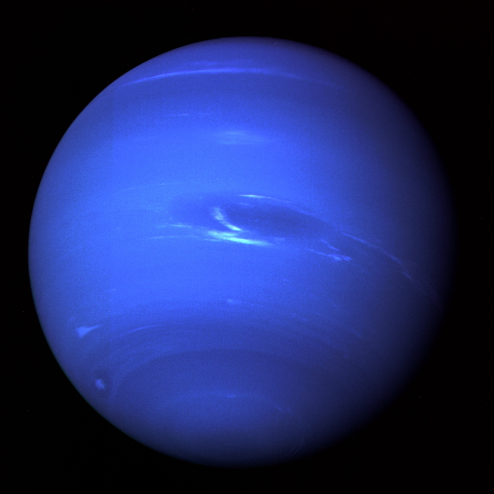

Neptuno Es el planeta más exterior de los gigantes gaseosos y el primero que fue descubierto, en septiembre de 1846, gracias a predicciones matemáticas.
El interior de Neptuno es roca fundida con agua, metano y amoníaco líquidos. El exterior es hidrógeno, helio, vapor de agua y metano, que le da el color azul.
Neptuno es un planeta dinámico, con manchas que recuerdan las tempestades de Júpiter. La más grande, la Gran Mancha Oscura, tenía un tamaño similar al de la Tierra, pero en 1994 desapareció y se ha formado otra.
Los vientos más fuertes de cualquier planeta del Sistema Solar son los de Neptuno. Muchos de ellos soplan en sentido contrario al de rotación. Cerca de la Gran Mancha Oscura se han medido vientos de 2.000 Km/h.
La nave Voyager II se acercó a Neptuno el año 1989 y lo fotografió. Descubrió seis de las ocho lunas que tiene y confirmó la existencia de anillos.
Neptuno tiene un sistema de cuatro anillos estrechos, delgados y muy tenues, difíciles de distingir con los telescopios terrestres. Se han formado a partir de partículas de polvo, arrancadas de las lunas interiores por los impactos de meteoritos pequeños.
En la atmósfera de Neptuno se llega a temperaturas cercanas a los 260 ºC bajo cero. Las nubes, de metano congelado, cambian con rapidez. La foto de la derecha muestra los cambios que detectó el Voyager II en un periodo de sólo 18 horas
La distancia que nos separa de Neptuno se puede entender mejor con dos datos: una nave ha de hacer un viaje de doce años para llegar y, desde allí, sus mensajes tardan más de cuatro horas para volver a la Tierra.
| Radio: | 24.622 km |
| Masa: | 102,4E24 kg (17,15 Masa terrestre) |
| Fecha de descubrimiento: | 23 de septiembre de 1846 |
| Superficie: | 7.618.272.763 km² |
| Lunas: | Tritón, Nereida, Larisa, Proteo, Despina, Náyade, Galatea, Talasa, Psámate, Neso, Sao, Halimede, Laomedeia |